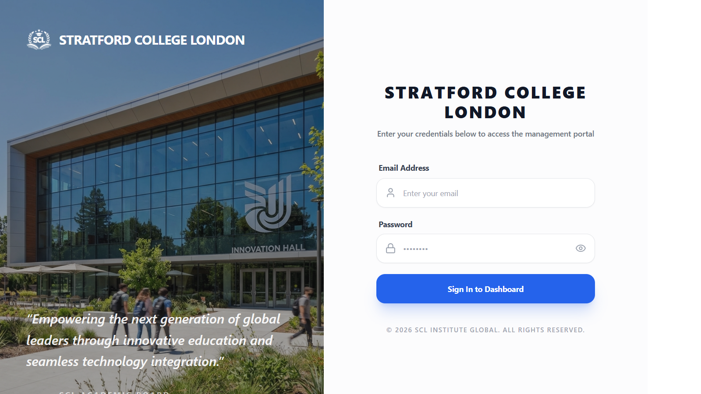
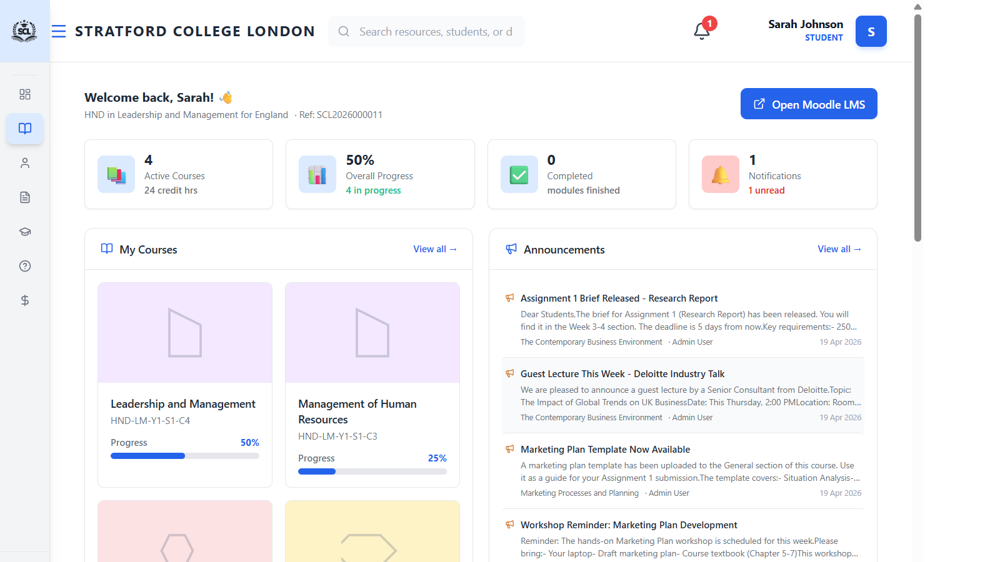
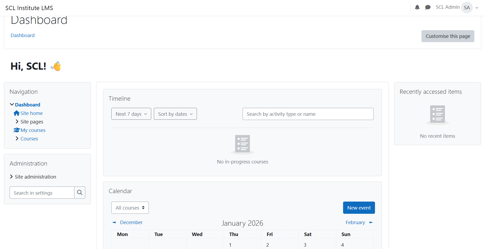

🔐 Demo Login — Student Account
↗ Go to Login



Go to the portal & sign in
Open a browser and visit the portal. Enter your email and password, click “Sign In to Dashboard”.
system.sclsandbox.xyzView your dashboard
See all active courses, your overall progress %, completed modules, and notifications on one screen.
system.sclsandbox.xyz/student/portalCheck grades & academic progress
Click Grades in the sidebar. See your full grade breakdown, points earned, and progress per course.
system.sclsandbox.xyz/student/gradesOpen Moodle LMS with one click
Click the blue “Open Moodle LMS” button on your dashboard. You are automatically signed in — no second password needed. Access course content, assignments, and quizzes there.
View programmes & timetable
Use the sidebar to navigate to your programme details and class timetable.
system.sclsandbox.xyz/student/programmesMy Dashboard
Courses, progress, notifications and upcoming events all in one place.
Grades & Progress
Full grade breakdown with charts and points per course.
Moodle LMS (SSO)
One-click access to assignments, quizzes, and course materials. No separate login.
My Courses
Full list of enrolled courses with progress bars and module details.
Programmes & Timetable
Programme details, semester schedule, and class timetable.
Announcements
College and course announcements posted by admin and teachers.